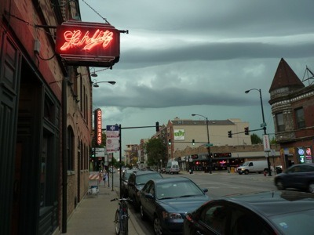
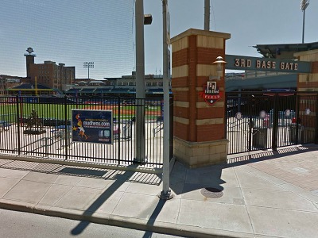
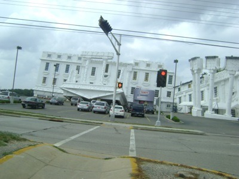
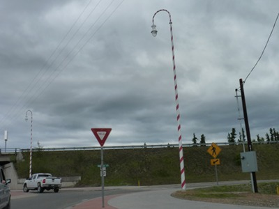
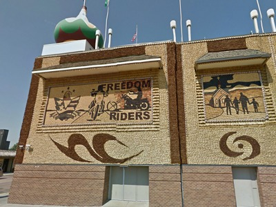
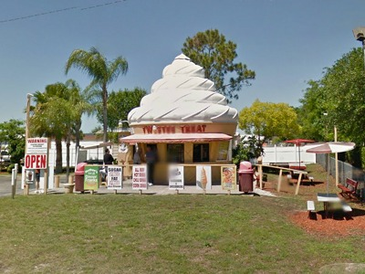
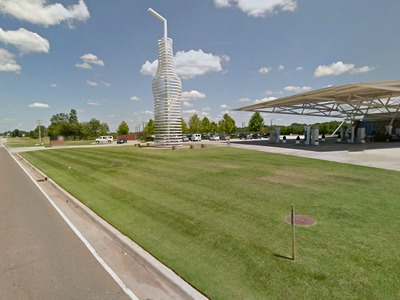
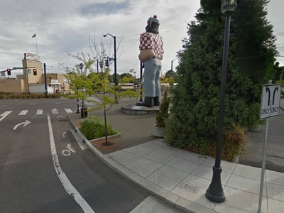
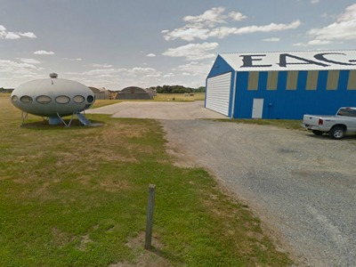

Authors: Erin Rhode, Chris Lyon, and Laura Martini
In the second stage of the puzzle, on the food map, the letters shaded in blue spell out GARCIAPARRA, the answer to the puzzle.
In the third and final stage, each of the nine images is from a different US state.
|  | Illinois (Schubas Tavern, Chicago) |
|  | Ohio (Fifth Third Field, Toledo) |
|  | Wisconsin (Top Secret, Wisconsin Dells) |
|  | Alaska (North Pole) |
|  | South Dakota (Mitchell Corn Palace) |
|  | Florida (Twistee Treat franchise, Hudson) |
|  | Oklahoma (Pop's, Arcadia) |
|  | Oregon (Paul Bunyan, Portland) |
|  | Delaware (Eagle Crest Airport) |
Reading the first letter of each state gives IOWASFOOD. On the food map, Iowa's Food is BACON, which is the title of the puzzle.